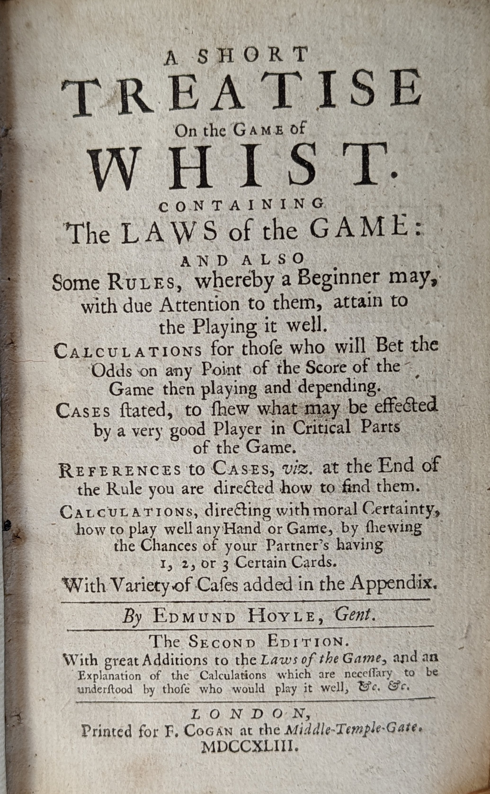

A Descriptive Bibliography of Edmond Hoyle
Copyright © 2014-26 by David Levy
(page updated 2026-01-30)User Guide
Whist.2
A Short Treatise on the Game of Whist, printed for F. Cogan, second London edition, 1743.
 |
Title: | A SHORT | TREATISE | On the Game of | WHIST. | CONTAINING | The LAWS of the GAME: | AND ALSO | Some Rules, whereby a Beginner may, | with due Attention to them, attain to | the Playing it well. | Calculations for thoſe who will Bet the | Odds on any Point of the Score of the | Game then playing and depending. | Cases ſtated, to ſhew what may be effected | by a very good Player in Critical Parts | of the Game. | References to Cases, viz. at the End of | the Rule you are directed how to find them. | Calculations, directing with moral Certainty, | how to play well any Hand or Game, by ſhewing | the Chances of your Partner’s having | 1, 2, or 3 Certain Cards. | With Variety of Caſes added in the Appendix. | [rule] | By Edmund Hoyle, Gent. | [rule] | The Second Edition. | With great Additions to the Laws of the Game, and an | Explanation of the Calculations which are neceſſary to be | underſtood by thoſe who would play it well, &c &c. | [rule] | LONDON, | Printed for F. Cogan at the Middle-Temple-Gate. | MDCCXLIII. |
| Collation: | 12o: A–H6 I2 [$½ signed; signing A5 as A]; 50 leaves, pp. [8 ] [1] 2–10, χ5–10 11–86 =92 [χ5–10 numbered with prefixed *] |
| Contents: | Signature (Page) Reference | Contents | Signature (Page) Reference | Running Titles |
| A1r | title | |||
| A1v | ‘ADVERTISEMENT. | T2HIS Book having been entered at | Stationers Hall, according to Act | of Parliament, whoever ſhall preſume to | Print or Vend a Pirate Edition, ſhall be | Proſecuted according to Law. | [advertisement for Whist.1.2 and Laws.1]’ | |||
| A2r–A4r | ‘[headpiece] | THE | CONTENTS. | [...]’ | A2v–A4r | ‘The CONTENTS’ | |
| A4v | blank | |||
| A5r–I2v (1–86) | ‘[headpiece] | A SHORT | TREATISE | On the GAME of | WHIST. | [...]’ | A5v–I2r (2–85) | ‘A ſhort Treatise on | the Game of Whist.’ | |
| I2v (86) | ‘A ſhort Treatise, &c.’ |
| Catchwords: | A6v(4) Second [2d] |
| Publisher: | Francis Cogan |
| Printer: | James Mechell (ornaments) |
| Notices: | 1743-03-04 Daily Post: "In a few days will be publish'd, with great additions" 1743-03-05 General Evening Post: "This day was published, with great additions, price two shillings..." Advertised with Whist.1.2 and Laws.1. |
| Price: | 2s. (advertisement) |
| References: | ESTC N24768, Horr 643 (not distinguished from Whist.1.2), Jessel 770 (not distinguished from Whist.1.2), Rather 5 (not distinguished from Whist.1.2) |
| Copies Seen: | BFl [I.795/HOYL (b1124767)]; L [1578/5673] (ECCO) (Google); O [Jessel f.535]; CSmH [317502]; TNJ [GV1277.H87 1743b]; Levy [1637]; Levy [1744]; Levy [2182] |
| Other Copies: | ABAU [GV1277.H89 1743]; WMM [GV1277.H89 1743] |